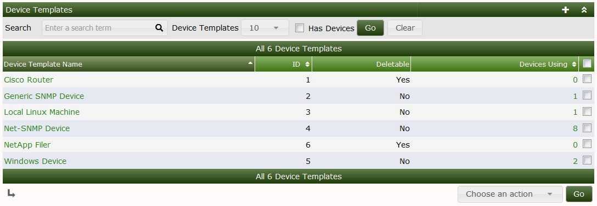

Device Templates are Cacti objects that allows you to define classes of Devices that includes from one to many Graph Templates, Data Queries and other Plugin related object types.
The purpose of Device Templates is to simplify the Automation process by pre-defining the Graphs that should be created for every Device that is added to Cacti. They work in conjunction with Automation Templates so that when Cacti discovers a Network it knows what Graphs to create for each Device.
The Device Templates main screen looks like the image below:

From this page, you can see the title of each Device Template, it's ID which is important for the Cacti CLI scripts. You can see if the Device Template can be removed, and the number of Devices using the Device Template. Templates that are used by Devices can not be removed and therefore if you attempt to remove one of these Templates, you will receive and error message.
From the drop down there are three options, they are:
| Option | Description |
|---|---|
| Delete | Remove the Device Template if it's Deletable |
| Duplicate | Make an exact copy of the Device Template. |
| Sync Devices | Update all Devices using this Device Template with the latest definition, adding, but not removing Graph Templates, and Data Queries. |
When editing a Device Template, you will see the page as displayed below. From this page, you can add and remove Graph Templates, Data Queries, and other Plugin objects. In the image below, you can see that the Cisco Router has one Graph Template that of Cisco - CPU Usage and one Data Query that of SNMP - Interface Statistics. There are no Threshold Templates defined on the system, so there is no way to select one.
To add a Graph Template or Data Query to the Device Template, simply select it from the drop down, and press the Add button. There is no need to Save afterwards. To removed one of these items, simply press the x glyph to the right of the desired Graph Template or Data Query.
Copyright (c) 2004-2024 The Cacti Group